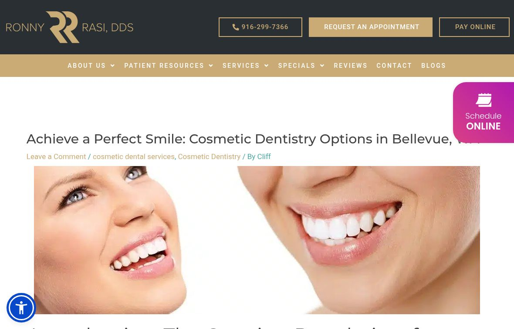

A real team to introduce
The current doctors page introduces Dr. Rasi, Dr. Ciccarelli and Dr. Powell, with different clinical roles.
Vessel Archive × Ronny Rasi, DDS / A local marketing review
We’re Vessel Archive, a local Sacramento team. We help local businesses get more leads, inquiries and bookings with local Meta ads (Facebook and Instagram), the content for those ads, and local SEO: helping people nearby find you through your Google Business Profile, website and useful blog content.
What we found + how we’d help ↘A local practice should tell a local story.
We reviewed Ronny Rasi, DDS the way a potential client would, and the way an owner deciding where to spend a marketing budget would. Here’s what already builds confidence, what could make someone hesitate, and how we’d improve it.
01 / First, what you’re already doing well
The site introduces three clinicians, includes a before-and-after gallery and gives patients practical resources. The live Google profile showed 5.0 stars from 605 reviews. The local practice story already has strong material.
The current doctors page introduces Dr. Rasi, Dr. Ciccarelli and Dr. Powell, with different clinical roles.
A before-and-after gallery creates a starting point for more useful, treatment-specific explanations.
Membership information, a limited warranty and online scheduling are already part of the experience.
The most useful fixes are specific: remove geographic confusion, add context to case work, and make the appointment paths unmistakable.
The blog index links to “Cosmetic Dentistry Options in Bellevue, WA.” The article and its URL use Bellevue even though the site’s practice address is in Roseville.
Live article / Bellevue headline on the Roseville site ↗Why a customer might hesitateA Roseville visitor may wonder whether they have found the right practice when a service article speaks to Bellevue. It introduces doubt before the appointment decision.
Review the article with the practice, correct or replace it with genuinely local, clinically reviewed content, and use an appropriate redirect if its URL changes.
The sampled gallery presents before-and-after images without accompanying treatment names, timing or case narratives in the displayed page text. That makes the clinical work harder to understand.
Before & After Gallery / displayed case context ↗Why a customer might hesitateWithout treatment names or an explanation, a visitor may struggle to connect an image to their own concern or understand what a consultation would cover.
Organize consented cases by treatment. Add the goal, plan, timing and practitioner-approved explanation, with clear limitations and a relevant next step.
The homepage emphasizes Request an Appointment while a separate floating control says Schedule ONLINE. These are different promises, but the primary page does not explain which path a new patient should choose.
Homepage / main contact button and scheduling control ↗Why a customer might hesitateIf request and online scheduling mean different things, a patient may choose the wrong route or miss the option that fits them.
Confirm the intended use of each route with the team. Give the primary action a clear label, explain callback versus scheduling, and test both handoffs on phones.
The latest visible blog entries in our check are dated February 27, 2025. Build a maintainable series from current patient questions; a stale blog alone does not prove inactive social channels.
Use a filmed walkthrough and staff introductions to make the clinical team and visit experience more tangible.
The site’s Careers link points to Mosaic Dental Collective. Confirm who approves site, content and campaign changes before setting a production schedule.

The findings above link to the pages we reviewed on October 20. The customer impact is our practical judgment, not a measured count of lost inquiries. We would confirm the details with your team before making changes.
View the practice website ↗The live Google profile showed 5.0 stars from 605 reviews on October 20, 2026. The practice address and website were visible in the same profile.
Live Google profile ↗Vessel would: Keep the profile, website and booking route aligned, and bring accurately attributed review proof into the patient journey. Counts are a dated snapshot, not a permanent total.
Google’s verification screen prevented a fresh mobile PageSpeed run in this review. No speed score is inferred from a failed or incomplete test.
Practice website ↗Vessel would: Establish the mobile baseline, then validate navigation, image loading and the first useful action on real devices before scaling traffic.
The public @rasidds Instagram profile includes video content. Public profile inspection did not establish a reliable latest-post date; sign-in restricted the post-detail checks. This is not evidence of inactivity.
Official Instagram profile ↗Vessel would: Build on the existing voice. Review a dated content sample with account access, then connect the strongest practitioner explanations to the relevant service pages.
The Meta advertiser search did not resolve an official advertiser reliably enough to establish current inventory. No “not running ads” conclusion is made.
Meta Ad Library ↗Vessel would: Confirm the advertiser account and existing marketing responsibilities before deciding whether to improve an existing campaign or test something new.
Google Analytics website-measurement code and CallRail phone-tracking code are present. These are pieces of code used for measurement. Seeing them does not prove that inquiry tracking, consent or reporting work correctly.
Website script review ↗Vessel would: Preserve useful existing tools. Check which inquiries are recorded, how booking is handed to the team, and how reporting respects patient privacy with the account owner.
Local AI search queries were attempted, but a complete answer capture could not be verified for this practice. No ranking failure or universal AI absence is asserted.
Practice content baseline ↗Vessel would: Use Search Console and a repeatable local query set to establish a baseline. Improve the practitioner, service and case context that both people and search systems can understand.
Public checks dated October 20, 2026. Account-level measurement and clinical content would be confirmed with your team before changes are made.
The goal is straightforward: help the right local people find the practice, understand why it may fit, and take a clear next step. We would agree the focus and responsibilities together.
Coordinate with the existing marketing owner, choose one service, and test approved Facebook and Instagram ads that lead to the right Roseville page.
Plan real practitioner-led video and practice photography. Edit approved material for Facebook, Instagram and the website, so the ad and the page tell the same story.
Correct the Bellevue article and keep Roseville location details consistent across the Google Business Profile, site and useful local blog content. Local SEO means making the practice easier to find and understand in relevant nearby searches.
Correct the wrong-city article and align selected service, gallery and consultation pages around the Roseville practice. Confirm what the visitor sees next and how the team follows up.
Vessel: strategy, page design and implementation, shoot planning, filming, editing, approved campaign work and reporting.
Your team: clinical accuracy, patient permissions, capacity, access approval and the patient response process.
We’d agree the page list, filming schedule, campaign responsibilities and approvals together before work begins.
Bring the questions, the people and the setting together. A planned shoot should produce useful explanations that feel like the practice.
Short introductions with each participating clinician, using approved role descriptions and the real Roseville office.
With patient permission, walk through the goal, plan and treatment timeline. Explain the decisions rather than showing an isolated after image.
Film the arrival experience, the consultation and what happens after an online request. Give the staff a reusable answer to common questions.
Filming is proposed. Any patient appearance or clinical claim needs appropriate permission and practitioner approval.
The sequence matters: agree the story, make the journey work, then learn from real inquiries. Dates depend on access, approvals and scheduling.
Confirm approvers and account ownership. Resolve the Bellevue article, map the booking paths and secure permissions for selected case material.
Launch the updated local pathway and approved video series. Test campaign creative with the existing marketing team once measurement is confirmed.
Review inquiry quality and completed booking outcomes. Refresh the strongest content and replace outdated material on a manageable schedule.
Local work. Real clients. A team you can talk to.
 AIMS Sports Recovery ↗
AIMS Sports Recovery ↗ Megan Meyerdick · Precision Home Loans
Megan Meyerdick · Precision Home LoansLet’s walk through the review together, choose one priority service and decide what to tackle first.
Talk through the first step ↗teo@vessel-archive.com · Sacramento, California